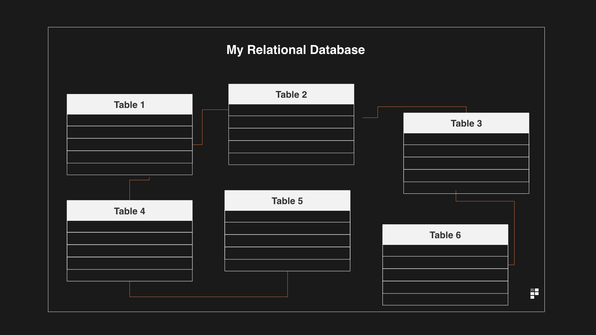

WEBSITE ON DDL AND DML COMMANDS
SQL stands for structured query language.We also refer it as 'SEQUEL'.
SQL is a databasse specific programing language - meaning it can be used with database.
Well, it’s a popular type of database known as a relational database.
What’s a relational database?
A relational database is a set of multiple data sets organised by tables, records and columns.
Each table is known as a relation.
Here’s a diagram which explains the concept:

Data is stored in tables. Just like data in your excel sheets is stored in tables.
In a relational database these tables can communicate with each other based on specific fields in the database which are known as.
But let’s leave that for another day and not get bogged down in that.
Instead, let’s focus on the language for querying MySQL databases.
SQL is the language used to create, retrieve, update and delete data from a database.
For communicating with database SQL is broken into:
1)DDL:DATA DEFINATION LANGUAGE.
2)DML:DATA MANIPULATION LANGUAGE.
Data Definition Language (DDL) and Data Manipulation Language (DML) together forms a Database Language.
The basic difference between DDL and DML is that DDL (Data Definition Language) is used to Specify the database schema database structure.
On the other hand, DML (Data Manipulation Language) is used to access, modify or retrieve the data from the database.
Let us discuss the differences between DDL and DML, with the help of comparison chart shown below.
| BASIS OF COMPARISON | DDL | DML |
|---|---|---|
| BASIC | DDL is used to create the database schema. | DML is used to populate and manipulate database |
| Full Form | Data Definition Language | Data Manipulation Language |
| Classification | DDL is not classified further. | DML is further classified as Procedural and Non-Procedural DMLs. |
| Commands | CREATE, ALTER, DROP, TRUNCATE AND COMMENT and RENAME, etc. |
SELECT, INSERT, UPDATE, DELETE, MERGE, CALL, etc. |
WE specify a data base schema by a set of defination expressed by a special language called DATA-DEFINATION-LANGUAGE(DDL)
DDL or Data Definition Language actually consists of the SQL commands that can be used to define the database schema.
It simply deals with descriptions of the database schema and is used to create and modify the structure of database objects in the database.
DDL COMMANDS ARE:
1)CREATE
2)ALTER
3)DROP
4)TRUNCATE
5)COMMENT
6)RENAME
DML stands for DATA MANIPULATION LANGUAGE. The SQL commands that deals with the manipulation of data present in the
database belong to
DML or Data Manipulation Language and this includes most of the SQL statements.
DML COMMANDS ARE:
1)SELECT
2)INSERT
3)UPDATE
4)DELETE